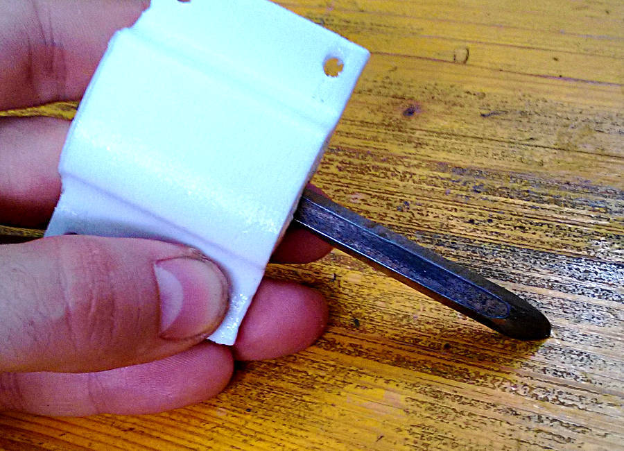

For this assignment we worked in two different groups; one with a machinethat design zen gardens and another on a CNC lathe. I was in the second group. Both the machines has two axis and some extra moving part (a servo for the fist one and a drill for the second). Having a similar structure we kept the software in common.
Beside designing and making the cutting tool, i did the main desing of the CNC lathe. Here a description of the method I used. Even if draw like this is not technically correct, I think it's pretty effective, and easy to learn and to understand.
Find the Main functional units
first step is to sketch a rought idea of the machine to estimate the main dimensions and the functional unit that compose the machine. In this case i divided it into 8 functional unit
I added some note to remember what i considered important and what to keep in mind.
Get into details
the step after, is to start with the elements that are directly related to the main constrains of the project. In this case the cutting tool must be aligned with the rotation axis of the spindle. As a consequence the X axis must keep the tool aligned in that position. This means that i could start with that block first.
Developing the project it helped me to start to add some dimensions. Of course it's possible that after a CAD they are going to change, but it's a starting point.
The main structure need a little bit more attention and to go in deep on some details. Another important information to keep in mind is the maximum diameter of the piece you want to work, we decided to have something big enough for pieces cut from a commercial foam panel.
Having a main view allowed me to focus on the single parts, in particular how to make the moving part doing that without friction.
After the assembly is clear I moved to the description of the single elements, in particular about the mandrel and the tailstock.
There is no description of the tool and the tool holder because I designed by myself.
I decided to make the tool with a very hard steel, even if the objective was to cut foam, this cause it's easier to make it very sharp and this is reducing the stress on the machine. The entire process was done by hand with the objective to get a round blade on the to and straight on both sides.

The holder is a 3D printed part, done in PETG (because of its machanical properties), that it's attached to the X axis with four M4x20 screws.